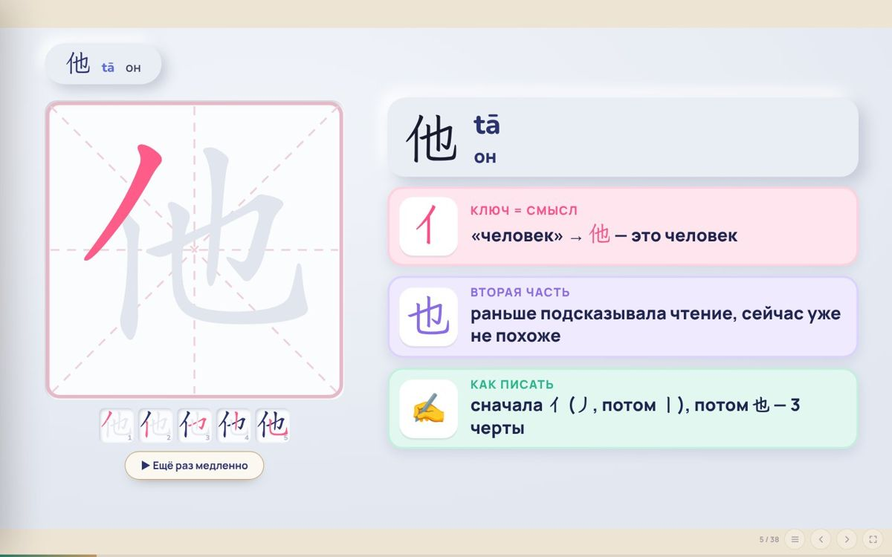
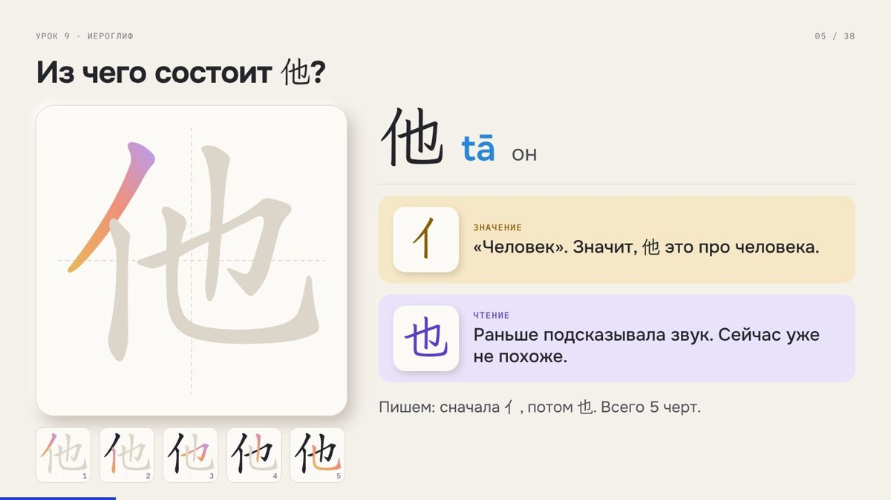
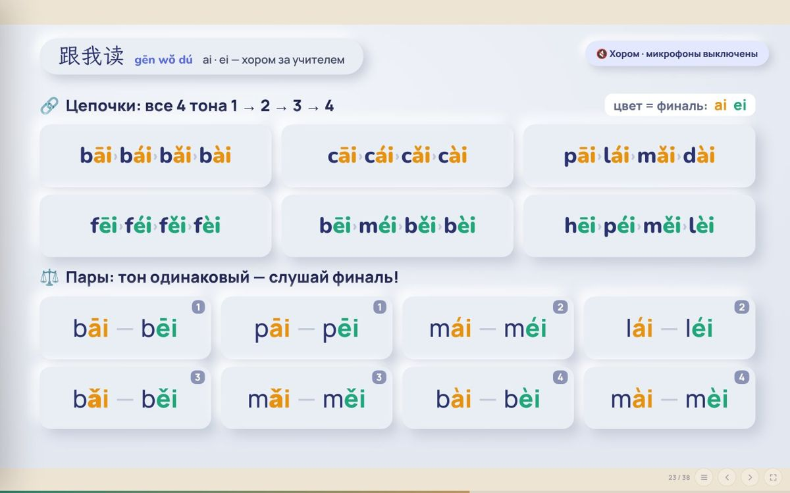
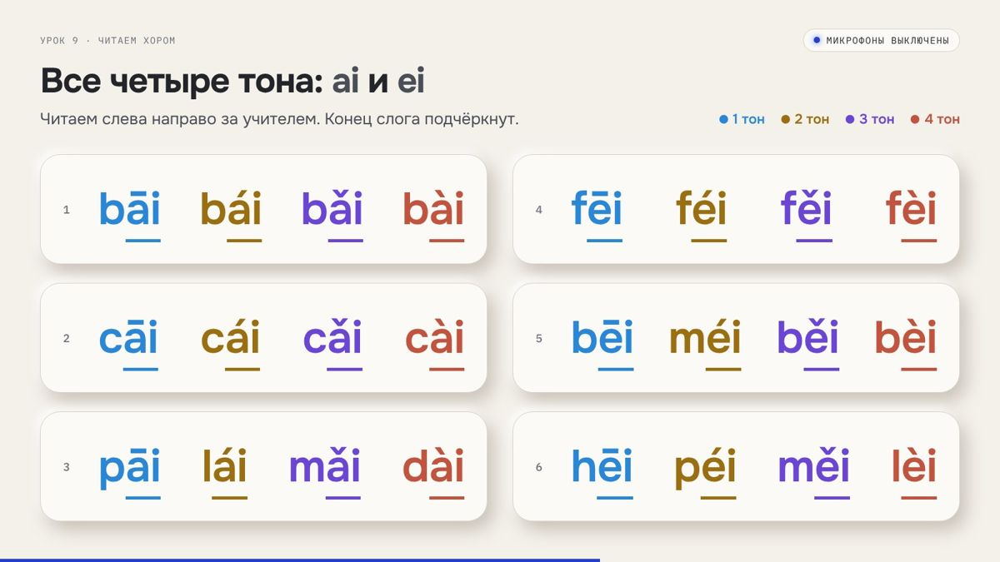
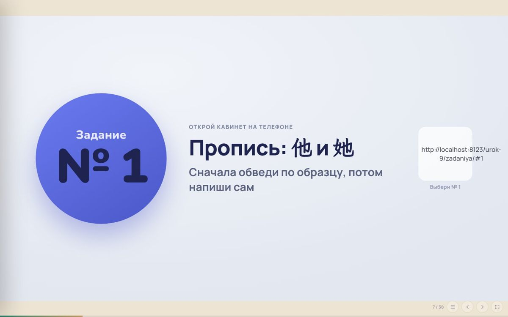
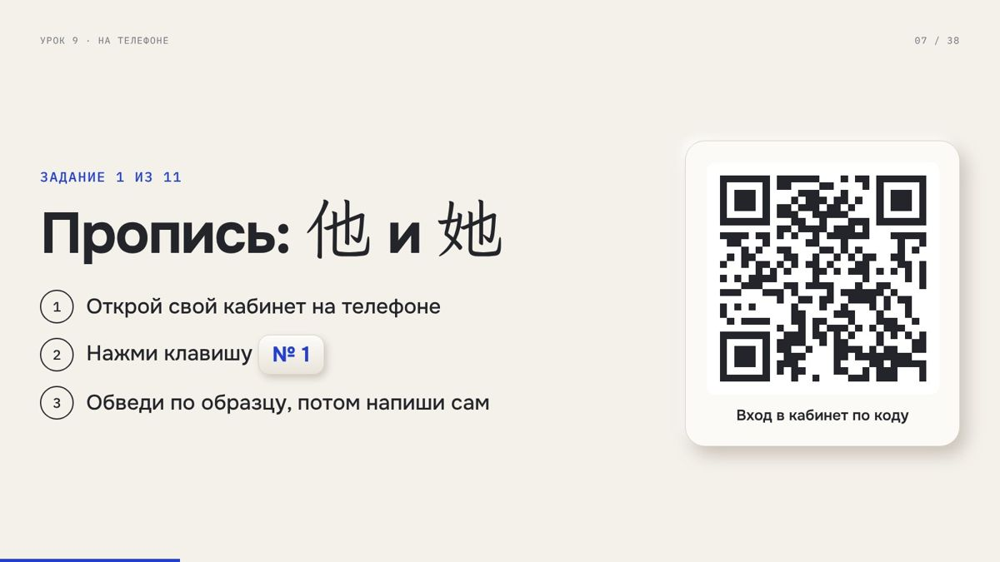
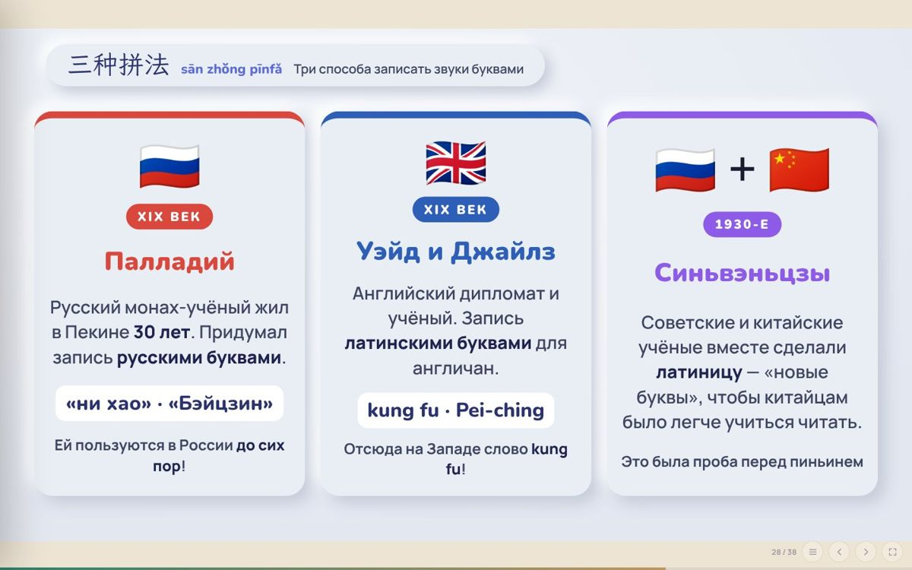
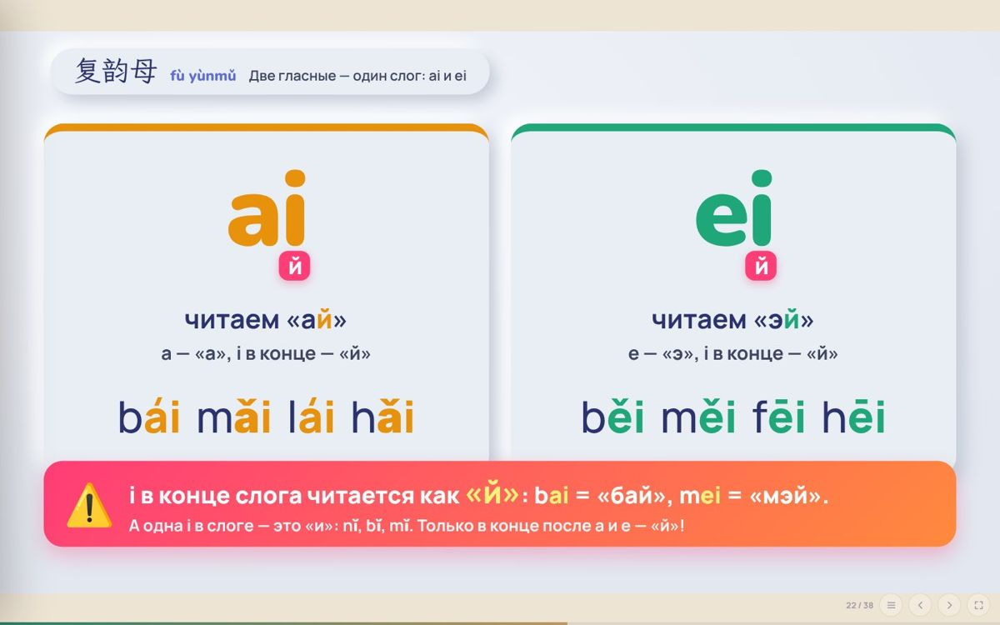
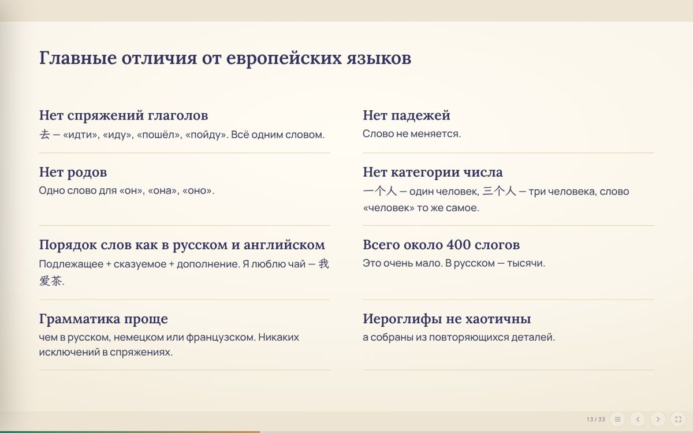

Блок В · Модуль В4
Презентации и учебные виджеты
Этот модуль про твою ежедневную работу: слайды урока, которые ты показываешь в Zoom, и задания, которые ученик делает на телефоне. Разберём на твоих настоящих слайдах «было / стало», почему один читается с первого взгляда, а другой приходится разглядывать.
Как ученик видит твой слайд
Ты делаешь слайд на большом экране ноутбука, и всё отлично видно. А ученик смотрит его через Zoom: картинка сжата, окно маленькое, сбоку лица, иногда это вообще телефон. Это как читать афишу с другого конца улицы. Поэтому на слайде урока всё должно быть крупнее, контрастнее и проще, чем тебе кажется нужным. Подвигай ползунок и посмотри, как слайд выглядит у ученика.
Мини-тест
Какой минимальный размер текста для учеников на сцене 1600 × 900?
После сжатия в Zoom 24 px остаются читаемыми. Мельче можно только служебные подписи, которые ученику читать не обязательно.
Шесть типов слайдов
Хорошая презентация урока собрана из небольшого набора типов слайдов, как учебник из одинаковых разделов: «новое слово», «читаем», «упражнение». Когда типов мало, ученик быстро привыкает, где что искать, и думает о китайском, а не разглядывает новый макет на каждом слайде.
Мини-тест
Нужно сравнить ai и ei. Какой тип слайда?
Две колонки с одним крупным примером в каждой и вывод одной строкой это ровно задача сравнения.
Сетка слайда
У всех слайдов одна и та же невидимая разметка, как у страниц тетради с полями. Тогда при листании ничего не прыгает: вопрос всегда в одном месте, номер слайда в одном месте, рабочее место одинаковое. Нажми «Показать сетку».
Мини-тест
Внизу слайда пустая треть. Что сделать?
Воздух хорош вокруг главного, но пустая нижняя треть значит, что объект мог бы быть крупнее и лучше читаться в Zoom.
Шкала размеров на слайде
Размеры букв на слайде тоже берутся из короткой таблицы, как размеры кастрюль на кухне: большая, средняя, маленькая, и других нет. Числа ниже для слайда размером 1600 × 900.
| Что | Размер на сцене 1600 × 900 |
|---|---|
| Главный иероглиф в клетке | 400–520 |
| Иероглиф в строке слова | 96–120 |
| Заголовок задания | 88–96 |
| Пиньинь в упражнении на чтение | 64–72 |
| Пиньинь рядом с иероглифом | 56–64 |
| Вопрос слайда | 52–56 |
| Перевод | 36–40 |
| Обычный текст, шаги | 28–34 |
| Служебная подпись (моно, капс) | 14–16 |
Мини-тест
Сколько слов русского текста максимум на обычном слайде?
25 слов это предел, который читают с экрана, пока учитель говорит. Исключение: слайд-история, до 40 слов.
Сколько одинаковых блоков (слогов, карточек) на одном слайде?
Больше шести одинаковых блоков глаз не охватывает, и ученик теряет строку, которую читает класс.
Было и стало: твои слайды
Три пары слайдов из твоих уроков: как было и как можно сделать. Нажми на картинку, чтобы рассмотреть крупно. Цвета на «стало» условные, палитру ты ещё выбираешь, поэтому смотри на расстановку и размеры, а не на цвет.
Иероглиф 他


Читаем хором


Задание на телефоне


Найди ошибки сама
Теперь попробуй сама побыть проверяющим. Эти три слайда ещё не переделаны. Посмотри на каждый, ответь на вопрос и только потом читай объяснение.

Слайд «Три способа записать звуки»
Что здесь главная проблема?
Красный, синий и фиолетовый ничего не значат, просто «чтобы было разное». Флаги-эмодзи выглядят дёшево и по-разному на разных компьютерах. В каждой колонке по 30 слов мелко. Лучше: одна строка-пример крупно в каждой колонке, без флагов, цвет только у главного.

Слайд «ai и ei»
Что нарушает правила?
Две колонки и крупный пример это как раз хорошо. Плохо: оранжево-розовая плашка с белым текстом (низкий контраст и «тревожный» вид для обычного правила), значок ⚠ пугает, а цвет здесь значит финаль, хотя на других слайдах он значит тон.

Слайд «Главные отличия»
Этот слайд аккуратный. Почему он всё равно не годится для Zoom?
Типографика спокойная и красивая, это плюс. Но 8 пунктов с пояснениями мелко это документ, а не слайд. Лучше 2 слайда по 4 пункта, заголовок пункта 34–40, пояснение 28.
Виджеты заданий на телефоне
Задание, которое ученик открывает по QR-коду, это маленькое приложение на один раз. Всё из модуля Приложения здесь работает, но есть особенность: идёт урок, времени мало, и понять, что делать, нужно за 3 секунды. Как табличка на двери туалета: смотришь мельком и сразу понятно.
- Один герой на экран: иероглиф, поле письма или игровое поле.
- Кнопки ответа высотой не меньше 64 пикселей (это примерно с подушечку пальца), между ними не меньше 8. Иначе ребёнок промахивается.
- Обычную клавиатуру телефона не открываем: она закрывает полэкрана. Рисуем свои кнопки только с нужными буквами, как пульт с несколькими кнопками вместо полной клавиатуры.
- Ученика не ругаем: вместо «неверно» мягкий огонёк «попробуй ещё» и подсказка.
- Если задание открыли на компьютере, не растягиваем узкую телефонную колонку на весь экран. Делаем две колонки: слева задание, справа кнопки ответа.
Мини-тест
В задании 10 слов для перевода. Как сделать?
Один шаг на экран без прокрутки. Счётчик показывает, сколько осталось, и ученику спокойнее.
Движение на слайде
Движение на слайде нужно, чтобы вести внимание, а не для красоты. Как указка учителя: показывает, куда смотреть сейчас. Части слайда появляются по твоему щелчку, по одной, вслед за объяснением. А черта иероглифа пишется в том порядке и направлении, как её пишет рука.
- Смена слайда около половины секунды (400–600 миллисекунд), спокойно, без вылетов и кувырков.
- Появление части по щелчку ещё быстрее, около трети секунды.
- Ничего не движется само, пока дети читают.
Мини-тест
Пока класс читает слоги хором, на фоне медленно плавают иероглифы. Хорошо?
Глаз всегда реагирует на движение. Во время чтения всё лишнее должно стоять на месте.
Проверка перед уроком
- Сделай окно со слайдом узким, в половину экрана. Всё читается?
- Сделай снимок слайда и в телефоне поставь чёрно-белый фильтр. Видно, где карточки и что главное?
- Закрой глаза на 2 секунды и открой. Что увидела первым? Это главный объект?
- Каждый цвет можешь объяснить одним словом: тон, значение, чтение, действие?
- Нижнее поле заполнено? Слов не больше 25? Блоков не больше 6?
- Файл открывается без интернета?
Полные правила для сборщика презентаций и заданий лежат в файлах проекта: «Правила для презентаций урока» и «Правила дизайна виджетов Задания урока».
Словарик модуля
Все слова этого модуля в одном месте. Пробегись глазами: если слово понятно и можешь объяснить его своими словами, нажми «Знаю». Галочка «показать только незнакомые» спрячет выученные, так удобно повторять. Итоговый тест по всем словам курса в конце курса.